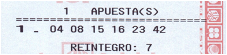

A partir del valor que indiqui l'usuari, validar que té 3 decimals i si és vàlid cal fer els càlculs següents: meitat amb 2 decimals, quadrat, cub, arrel quadrada. Mostrar els resultats dins de l'etiqueta p amb id resultats
Quan l'usuari premi el botó cal:
Dissenyar un guió que generi una aposta a la loteria primitiva de manera automàtica.
Aquesta consisteix en generar 6 números diferents entre ells.
Els valors han de ser entre 1 i 49.
A més hi ha un 7è número que correspon al reintegrament, valor entre 0 i 9.
Observació: Els valors generats cal mostrar-los ordenats de menor a major. Tenint present que els números menors de 10 cal afegir un 0 al davant.
| 01 | 02 | 03 | 04 | 05 | 06 |
| REINTEGRAMENT | [0-9] | ||||
Exemple:
Dissenyar un guió que generi una quiniela de futbol de manera automàtica.
visualitzar l'array de valors generats tot senser en l'etiqueta span amb id quiniela:
És a dir, una cosa de l'estil: [1,X,2,1,1,1,2,2,X,1,X,X,2,1,1]